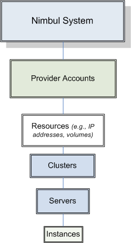
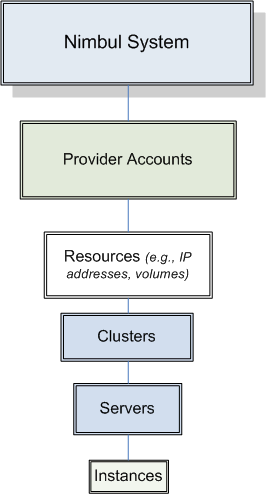

Object Hierarchy
In Nimbul, servers, clusters, provider accounts and so on can be thought of as system objects. The following diagram shows the hierarchy of objects in Nimbul:

Nimbul / Getting Started / Object Hierarchy
In Nimbul, servers, clusters, provider accounts and so on can be thought of as system objects. The following diagram shows the hierarchy of objects in Nimbul:
